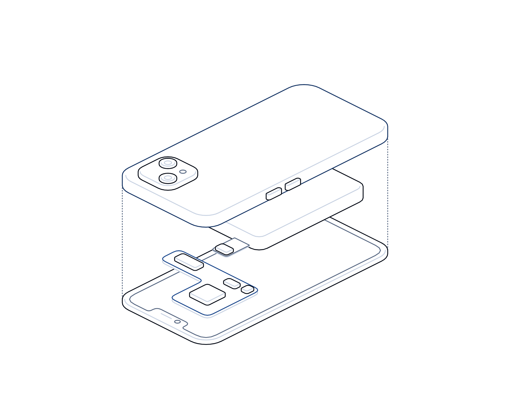

Fakes at Scale

Intelligence report
No. 16 · November 2026
Intelligence report · AI impersonation and fabricated content
Fakes
at scale.
A New York indictment alleging $129 million stolen with cloned voices of executives and lawyers, courts confronting judgments and filings built on cases that do not exist, and why verification now has to be designed in.
Evidence-based analysis · Every figure sourcedtransputec.com
Inside
Contents
An evidence-based look at AI impersonation fraud and AI-fabricated content in courts: the alleged $129 million scheme charged in New York, the Arup deepfake call, the run of fake legal citations, and what UK organisations should do now.
Executive summary03
Key findings04
At a glance05
Timeline06
01The cases07
02How the fakes work11
03What it means for UK organisations16
Sources22
Contents Fakes at Scale · Hot Topics · Intelligence Report02 / 24
Executive summary
Generative AI has made convincing fakes cheap. The defence is process, not perception.
On 5 November 2026, US prosecutors in Manhattan announced charges against three men accused of using AI to imitate the voices and sometimes the faces of company executives and law firm partners. They allege the scheme ran from July 2024 to February 2026, targeted thousands of companies and took more than $129 million.1,2 The defendants are presumed innocent, and the allegations have not been tested in court.
The method alleged is an old fraud with new tools: an email from a fake chief executive, a call in which AI supplies the voice, and a fake lawyer who gives the payment instructions.2 It echoes the 2024 case in which Arup lost about $25 million after a Hong Kong employee joined a video call populated by deepfakes of senior colleagues.3
The same week, courts were dealing with a different kind of fake. An English High Court judgment recorded that a prosecutor had cited a case that does not exist, and India's Bombay High Court quashed a customs order that relied on two non-existent Supreme Court judgments.4,5 A public tracker now lists more than 2,200 court decisions worldwide involving AI-fabricated material.6
Both problems exploit the same weakness: people trust material that looks and sounds right. UK organisations should stop asking staff to spot fakes and start requiring checks that hold whether or not the fake is spotted.
The bottom line
Seeing and hearing is no longer believing. Payments, approvals and professional work need verification steps that do not depend on recognising a face, a voice or a plausible citation.
Executive summary Fakes at Scale · Hot Topics · Intelligence Report03 / 24
Key findings
Seven things the evidence shows
01
Impersonation fraud now uses AI at industrial scale, prosecutors allege.
The New York indictment describes thousands of companies targeted and more than $129 million taken over about 19 months.1
02
The target is the payment process, not the IT system.
In both the alleged scheme and the Arup case, staff authorised the transfers themselves. Arup said none of its internal systems were compromised.2,3
03
Impersonating advisers adds credibility.
Prosecutors allege staff were passed from a fake chief executive to a fake lawyer, one of whom mainly posed as a UK attorney.2
04
UK businesses are among the victims and the UK is part of the case.
A UK fintech firm is named among the victims, and one defendant was arrested in the UK.1,2
05
Fabricated content has reached the bench, not only the bar.
A US appeals court vacated an injunction and reassigned a case after a judge acknowledged AI-generated errors in an order.7
06
UK regulators have moved from guidance to warnings.
The SRA issued a formal warning notice in August 2026 after 42 reports of potential AI misuse, and a tribunal struck off a lawyer for AI-fabricated citations.8,9
07
The common failure is an unchecked step.
In every case examined here, a single person acted on, or put forward, material that nobody had independently verified.
Key findings Fakes at Scale · Hot Topics · Intelligence Report04 / 24
At a glance
The numbers behind the story
Figures for the New York case are allegations from prosecutors and have not been proved.
$129m+
Total prosecutors allege was taken from companies worldwide between July 2024 and February 2026.1
HK$200m
About $25 million transferred in 15 payments by an Arup employee in Hong Kong after a deepfake video call.3
2,266
Court decisions worldwide involving AI-fabricated content in one public database at 5 November 2026, about 90 in the UK.6
45
Fake citations or quotations in one witness statement in a £90 million claim considered by the High Court in 2025.10
42
Reports of potential AI misuse received by the SRA between July 2025 and July 2026.8
£75.6m
Authorised push payment fraud losses suffered by UK businesses in 2025, according to UK Finance.11
 At a glance
At a glanceFakes at Scale · Hot Topics · Intelligence Report05 / 24
Timeline
From one deepfake call to a $129 million indictment
Selected events. Dates are as reported by courts, agencies and the press.
Jan to May 2024
Arup deepfake call
A Hong Kong employee makes 15 transfers after a video call with deepfaked colleagues. Arup confirms in May.3
Jul 2024
Alleged scheme begins
Prosecutors say the impersonation scheme ran from this month to February 2026.1
Dec 2024
FBI warns on generative AI fraud
The FBI says criminals use AI video to impersonate executives in live chats.12
6 Jun 2025
High Court warning to lawyers
The Divisional Court says free AI tools cannot do reliable legal research.10
17 Aug 2026
SRA warning notice
The SRA warns that solicitors remain responsible for AI-assisted work.8
Jun to Sep 2026
Arrests in Spain and the UK
Two defendants are arrested in Spain and one in the UK.2
Oct 2026
Order vacated in the US
An appeals court vacates an injunction and reassigns the case after AI errors.7
3 Nov 2026
Fake case in an English court
A prosecutor's non-existent citation is recorded in a High Court judgment.4
5 Nov 2026
Indictment announced
US prosecutors in Manhattan announce the $129 million charges.1
Timeline Fakes at Scale · Hot Topics · Intelligence Report06 / 24
01
Part 01
The
cases.
What prosecutors allege in New York, what Arup confirmed in 2024, and what courts are finding in legal filings.
01The alleged $129 million scheme
02Impersonation cases compared
03Fakes in the courtroom
Part 01 Fakes at Scale · Hot Topics · Intelligence Report07 / 24
The New York indictment
The alleged $129 million scheme
The scheme, as alleged, did not hack anything. It borrowed authority, one convincing call at a time.
The US Attorney's Office for the Southern District of New York announced the indictment on 5 November 2026. Each of the three defendants faces seven counts, including conspiracy to commit wire fraud, wire fraud, aggravated identity theft and money laundering.1 They are presumed innocent unless proved guilty.
Prosecutors allege that from July 2024 to February 2026 the group used AI to impersonate the voices and images of corporate executives and of lawyers at major firms.1 Targets were typically accounting staff with authority to approve large transfers. An email posing as the chief executive asked for help with a confidential transaction, and a phone or video call followed in which AI mimicked the executive's voice and sometimes image.2
Staff were then sent to a supposed lawyer, who gave the payment instructions. One defendant, prosecutors say, mainly impersonated UK attorneys using a handwritten script titled "Lawyer Call". The money was allegedly converted to cryptocurrency to hide where it went.2
The named victims are ordinary organisations: hospital systems in Missouri and California, a Rhode Island bank, a New York investment bank, a Massachusetts mutual fund company, a Florida pet food company and a UK fintech firm.1 Two defendants were arrested in Spain and one in the UK between June and September, and extradition requests are pending.2
The press release uses the term "SI", for super intelligence, rather than AI. The US Attorney urged businesses to consider how best to protect themselves.1 Individual loss figures vary between press reports, so we do not repeat them here.
What stands out is not technical sophistication but process design. The alleged scheme layered authority (the chief executive), secrecy (a confidential deal) and outside validation (a lawyer) to override the normal checks on a payment.
The cases Fakes at Scale · Hot Topics · Intelligence Report08 / 24
Impersonation cases compared
Same playbook, better tools
Two cases in which staff authorised payments after AI-assisted impersonation. The New York details are allegations.
Case
Who was faked
Channel
Reported loss
Status
Arup, Hong Kong, Jan 2024
Chief financial officer and colleagues
Multi-person video conference3
HK$200m, about $25m
Confirmed by Arup; police investigation
Alleged scheme, Jul 2024 to Feb 2026
Chief executives and law firm partners
Email, then phone or video2
More than $129m in total
Indicted; presumed innocent
FBI general warning, Dec 2024
Executives, officials, relatives
Live video chat and cloned voice12
Not quantified
Public advisory
FBI warning, May 2025
Senior US officials
Texts and AI voice messages13
Not quantified
Public advisory
The cases Fakes at Scale · Hot Topics · Intelligence Report09 / 24
Fakes in the courtroom
When the citation is the fake
A fake citation is checked by opening the source. Most of these were caught only because the other side did.
The courts' problem began with lawyers and has now reached judges and public authorities. In June 2025 the Divisional Court in London considered two cases in which fake authorities were put before the court, including a witness statement in a £90 million claim containing 45 fake citations or quotations. It said freely available tools such as ChatGPT are not capable of conducting reliable legal research.10
In May 2026 a High Court judge found that a junior solicitor at Pinsent Masons had used AI to draft letters to the court that quoted rule text which does not exist. The firm self-reported to the SRA and strengthened its safeguards; the judge said admonishment alone was insufficient but declined to refer the matter for contempt.14
In September 2026 the Solicitors Disciplinary Tribunal struck off a registered foreign lawyer whose AI-drafted defence contained false citations, followed by an AI-drafted correction containing more. It was the tribunal's first case on AI hallucinations.9
Public bodies are affected too. In early November an English High Court judgment recorded a prosecutor's citation of a Court of Appeal case that does not exist. The CPS said the error arose from legal research using the internet and that its AI policy requires human checks.4 In India, the Bombay High Court quashed a customs order that relied on two non-existent Supreme Court judgments.5
Judges are not immune. In the US, a federal judge acknowledged that an order contained AI-generated errors after a clerk used an AI tool in drafting; the appeals court vacated the injunction and reassigned the case in October 2026.7 A survey of 360 Korean judges released on 2 November found about 80% of those in civil, family and administrative cases had seen citations to non-existent or fabricated rulings.15
The lesson is consistent. Fluent, well-formatted content passes a quick read. It fails only when someone opens the source.
The cases Fakes at Scale · Hot Topics · Intelligence Report10 / 24
02
Part 02
How the
fakes work.
Why cloned voices, synthetic video and invented citations get past capable, careful people.
01Voice and video impersonation
02Why hallucinations get through
03Consequences
Part 02 Fakes at Scale · Hot Topics · Intelligence Report11 / 24
Voice and video impersonation
How a cloned call is built and used

01
Collect samples
Voice and video of executives are widely available from interviews, webinars and social media. The FBI advises limiting what is public.12
02
Generate the likeness
AI tools produce speech or video in the target's voice and face. The FBI says cloned voices can sound nearly identical to the real person.13
03
Set the scene
A pretext email creates urgency and secrecy, then a call adds a familiar voice or face, as alleged in the New York case.2
04
Close the loop
A third party, such as a fake lawyer, supplies payment details, so the victim never questions the original instruction.2
How the fakes work Fakes at Scale · Hot Topics · Intelligence Report12 / 24
Why hallucinations get through
Plausible is not the same as true
Fabricated citations survive because everybody assumes somebody else checked them.
Large language models generate text by predicting what is likely to come next. A legal citation has a predictable shape: party names, a year in brackets, a court abbreviation, a number. The model can produce that shape without any real case behind it, and the result looks exactly like the genuine article.
Freely available tools do not reliably check their output against authoritative databases. That is why the High Court said in 2025 that they are not capable of conducting reliable legal research, and why the judiciary's own guidance warns judges that AI may invent cases and quotations.10,16
Organisational factors do the rest. In the Pinsent Masons case the judge said there was nothing to suggest the junior solicitor had checked any of the references the AI produced.14 In the tribunal case, AI was used to answer criticism of earlier AI errors, compounding them.9
Supervision often checks style rather than substance. A reviewer reads a draft for argument and tone, assumes the references were checked by the author, and signs it off. The author assumed the reviewer would catch anything wrong.
Time pressure, unfamiliar subject matter and a lack of approved tools make things worse. Staff who cannot easily reach a proper legal or financial database will reach for a chatbot instead.
None of this is unique to law. The same failure applies to consultancy reports, tender responses, financial analysis and regulatory returns. Any document whose authority depends on facts is exposed.
How the fakes work Fakes at Scale · Hot Topics · Intelligence Report13 / 24
Two failures, one root
Impersonation and hallucination side by side
Different actors and intent, but the same control gap.
Aspect
AI impersonation
AI-fabricated content
Who creates the fake
Criminals, deliberately.
Usually the organisation's own staff, by accident.
What it exploits
Trust in a familiar voice, face or authority.
Trust in fluent, well-formatted text.
Where it lands
Payment approvals and bank detail changes.
Court filings, client advice, reports and decisions.
What stops it
Call-back on known numbers, code words, two-person approval.
Source checking by a named person before release.
Cost of failure
Money lost, often unrecoverable.
Sanctions, costs, regulatory action and reputational damage.
How the fakes work Fakes at Scale · Hot Topics · Intelligence Report14 / 24
Consequences
Legal and professional consequences so far
Selected outcomes. The New York case is at the charging stage only.
Alleged $129m scheme
Seven counts each; most carry up to 20 years if convicted.
US prosecutors1
Fake citations, 2025
Wasted costs, public criticism and regulatory referrals; contempt not pursued.
Divisional Court10
Law firm letters, 2026
Published admonishment; firm self-reported to the regulator.
High Court14
Foreign lawyer, 2026
Struck off the register; tribunal's first AI hallucination case.
SDT9
US injunction, 2026
Injunction vacated and case reassigned to another judge.
Fifth Circuit7
Customs order, India
Order quashed by consent and sent back for a fresh hearing.
Bombay High Court5
How the fakes work Fakes at Scale · Hot Topics · Intelligence Report15 / 24
03
Part 03
The UK
picture.
Exposure, regulation and the steps that reduce both.
01What it means for UK organisations
02Where you are exposed
03Recommendations
Part 03 Fakes at Scale · Hot Topics · Intelligence Report16 / 24
What it means for UK organisations
Verification is now a governance question
No regulator has accepted 'the AI wrote it' as a defence. None is likely to.
UK organisations are already in the story. A UK fintech firm is among the named victims in the New York case, a defendant is alleged to have posed as UK lawyers, and one was arrested here.1,2 Arup, a UK headquartered firm, was the victim of the best-known deepfake video fraud to date.3
The wider fraud picture is still heavy. UK Finance reported £576.4 million lost to authorised push payment fraud in 2025, of which £75.6 million was lost by businesses.11 Those figures do not isolate AI impersonation, and we do not claim they do. They show the scale of fraud that relies on persuading people to send money.
Official advice already points the right way. The NCSC advises verifying important email requests through a second type of communication and making sure staff know how payments are normally made.17 The FBI recommends hanging up and calling back on a verified number, and agreeing a secret word.12
On fabricated content, UK regulators have been explicit. The SRA's August 2026 warning notice says individuals remain responsible for their work whether or not AI is used, and that failing to heed the notice risks disciplinary action.8 Judicial guidance says judges are personally responsible for material produced in their name.16
Other professions should expect the same logic from their own regulators and clients. Accountants, surveyors, consultants and in-house teams produce work that others rely on, and AI does not shift that responsibility.
The practical conclusion is that verification belongs in governance: owned by named people, written into process, tested and reported to the board, just like any other financial or professional control.
What it means for UK organisations Fakes at Scale · Hot Topics · Intelligence Report17 / 24
Where you are exposed
Four places fakes reach a UK organisation
You do not need to be a bank or a law firm to be a target.
Payments and bank details
Finance and accounts payable staff who can move money on instruction are the primary target of impersonation.
Executives and assistants
Leaders' public voices and faces feed the fakes; their assistants are often the first point of contact.
Professional and client work
Reports, advice and filings that rely on citations, figures or quotes can carry fabricated content.
Suppliers and advisers
Your law firm, accountant or outsourcer may use AI, and may be impersonated in requests to you.
If one person on one call can move money, or one unchecked draft can reach a court, that is the gap to close.
What it means for UK organisations Fakes at Scale · Hot Topics · Intelligence Report18 / 24
Recommendations
Seven things to do now
Based on guidance from the NCSC, the FBI, the SRA and the courts.
01
Make call-back mandatory for payments
Every new payee, urgent transfer and bank detail change is verified on a number already held.17,12
02
Require two-person approval
A second, independent person approves payments in the banking system, not just on paper.
03
Agree code words for senior leaders
Shared with finance and assistants, never written down in email.12
04
Train with realistic scenarios
Rehearse fake executive, fake supplier and fake lawyer calls with the staff who handle money.
05
Set a checking rule for AI-assisted work
No citation, figure or quote goes out until a named person has traced it to a source.8
06
Approve tools and protect data
Use business-grade AI tools with safeguards; keep client data out of public chatbots.8,16
07
Prepare incident routes
Know how to contact your bank, Action Fraud and relevant regulators, and how to correct a record.
What it means for UK organisations Fakes at Scale · Hot Topics · Intelligence Report19 / 24
For the board
Questions to put to your leadership team
Ask for evidence, not reassurance.
Payments and impersonation
?Could one person, acting on one call, send a large payment today?
?When did we last test our call-back and two-person approval controls?
?Do our executives and their assistants use code words?
AI-assisted work
?Which of our outputs to clients, courts or regulators use AI, and who checks them?
?Do our suppliers and advisers use AI in work for us, and how do they verify it?
?What would we do if fabricated content were found in something we published?
What it means for UK organisations Fakes at Scale · Hot Topics · Intelligence Report20 / 24
Glossary
Terms used in this report
Deepfake
Audio, image or video generated or altered by AI to show someone saying or doing something they did not.
Voice cloning
Using AI to reproduce a person's voice from recordings.
Hallucination
A confident AI output that is false or invented, such as a non-existent case.
Indictment
A formal charge in US federal court. It is an allegation, not a finding of guilt.
Authorised push payment fraud
Fraud in which the victim is tricked into authorising a payment to a criminal.
Call-back
Verifying a request by contacting the person on a number already held.
SRA
The Solicitors Regulation Authority, which regulates solicitors in England and Wales.
SDT
The Solicitors Disciplinary Tribunal, which decides serious disciplinary cases against solicitors.
Divisional Court
A High Court sitting of two or more judges, used here to consider lawyers' duties to the court.
Wasted costs
Costs a court orders a lawyer to pay personally because of improper or negligent conduct.
Glossary Fakes at Scale · Hot Topics · Intelligence Report21 / 24
Sources
Sources and notes
Sources were accessed in November 2026. Where reports differ, we say so in the text. Early reporting on live incidents can change.
01
NBC News, 3 foreign nationals allegedly used AI to mimic CEOs in $129M scheme, DOJ says, 6 Nov 2026, https://www.nbcnews.com/news/us-news/3-foreign-nationals-allegedly-used-ai-mimic-ceos-129m-scheme-doj-says-rcna607818
02
CBS News (AP), 3 allegedly used AI to steal some $129 million from companies by impersonating executives and lawyers, 6 Nov 2026, https://www.cbsnews.com/news/3-ai-steal-129-million-companies-impersonating-executives-lawyers/
03
CNN, British engineering giant Arup revealed as $25 million deepfake scam victim, 16 May 2024, https://edition.cnn.com/2024/05/16/tech/arup-deepfake-scam-loss-hong-kong-intl-hnk
04
The Telegraph (via Yahoo News), Prosecutor cites fake case in court after using AI, 3 Nov 2026, https://www.yahoo.com/news/world/articles/prosecutor-cites-fake-case-court-142958367.html
05
Bar and Bench, Bombay High Court quashes Customs order flagged for citing non-existent AI-generated judgments, 7 Nov 2026, https://barandbench.com/news/bombay-high-court-quashes-customs-order-flagged-for-citing-non-existent-ai-generated-judgments
06
D. Charlotin, AI Hallucination Cases database, accessed 8 Nov 2026 (2,266 cases at 5 Nov 2026), https://www.damiencharlotin.com/hallucinations/
07
Bloomberg Law, Judge whose ruling had AI-generated errors sees case reassigned, 22 Oct 2026, https://news.bloomberglaw.com/us-law-week/judge-whose-ruling-had-ai-generated-errors-sees-case-reassigned
08
Legal IT Insider, SRA issues AI usage warning notice, 17 Aug 2026, https://legaltechnology.com/sra-issues-ai-usage-warning-notice/ (SRA notice: https://www.sra.org.uk/solicitors/guidance/misuse-ai/)
09
Legal Futures, Lawyer struck off for using fake AI-generated cases before SDT, 4 Sep 2026, https://www.legalfutures.co.uk/latest-news/lawyer-struck-off-for-using-fake-ai-generated-cases-before-sdt
Sources Fakes at Scale · Hot Topics · Intelligence Report22 / 24
Sources
Sources and notes
Sources continued. Details of the New York case are taken from press reports of the US Attorney's announcement; the release itself could not be retrieved directly.
10
Legal Futures, Court issues stark warning to lawyers over AI-generated fake cases ([2025] EWHC 1383 (Admin)), 6 Jun 2025, https://www.legalfutures.co.uk/latest-news/court-issues-stark-warning-to-lawyers-over-ai-generated-fake-cases
11
UK Finance, Annual Fraud Report 2026 press release, 15 Jun 2026, https://www.ukfinance.org.uk/news-and-insight/press-release/fraud-report-2026-press-release
12
FBI IC3, Criminals use generative artificial intelligence to facilitate financial fraud (I-120324-PSA), 3 Dec 2024, https://www.ic3.gov/PSA/2024/PSA241203
13
FBI IC3, Senior US officials impersonated in malicious messaging campaign (I-051525-PSA), 15 May 2025, https://www.ic3.gov/PSA/2025/PSA250515
14
Legal Futures, Junior solicitor used AI to draft misleading letters to court, 26 May 2026, https://www.legalfutures.co.uk/latest-news/junior-solicitor-used-ai-to-draft-misleading-letters-to-court
15
Seoul Economic Daily, 8 in 10 judges encounter fake case citations in court filings, 2 Nov 2026, https://en.sedaily.com/society/2026/11/02/8-in-10-judges-encounter-fake-case-citations-in-court
16
Courts and Tribunals Judiciary, Artificial Intelligence (AI) guidance for judicial office holders, Oct 2025, https://www.judiciary.uk/wp-content/uploads/2025/10/Artificial-Intelligence-AI-Guidance-for-Judicial-Office-Holders-1.pdf
17
NCSC, Phishing attacks: defending your organisation, https://www.ncsc.gov.uk/guidance/phishing
Sources Fakes at Scale · Hot Topics · Intelligence Report23 / 24
Make verification
part of the process.
We help UK organisations harden payment and approval controls, train staff against impersonation, and put safe, checked AI use into professional work.
Book a verification reviewtransputec.com
Put it into practice
Companion playbook: Trust, but verify
Transputec · Hot Topics · Intelligence report No. 16